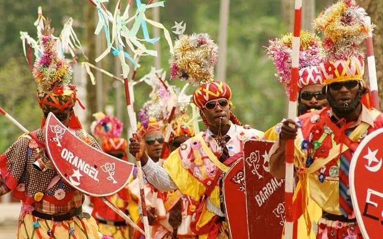
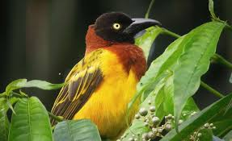
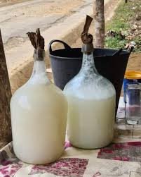
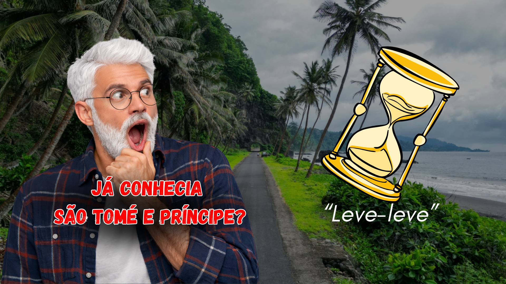
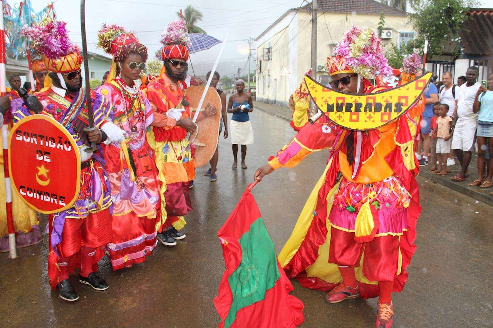
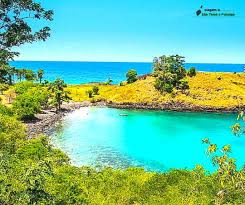

O Nosso Diário de Bordo

Dança e Música de São Tomé e Príncipe
Explore a vibração da cultura santomense através dos seus ritmos tradicionais e danças contagiantes...
Ler Mais
Gastronomia de São Tomé e Príncipe
Mergulhe numa viagem de sabores e aromas únicos, do tradicional calulu ao chocolate reconhecido mundialmente...
Ler Mais
Biodiversidade de São Tomé e Príncipe
Descubra a riqueza natural extraordinária de um dos arquipélagos mais biodiversos do Golfo da Guiné...
Ler Mais
Vinho de Palma de São Tomé e Príncipe
Conheça a história e o processo de produção desta bebida tradicional, símbolo da hospitalidade santomense...
Ler Mais
O Segredo do Centro do Mundo
Saiba mais sobre a localização privilegiada de São Tomé e Príncipe e a filosofia de vida Leve-Leve...
Ler MaisAs Nossas Experiências Autênticas
Descubra as experiências de turismo que vão além do convencional, desde a imersão cultural aos trilhos na natureza...
Ler Mais
Cultura e Tradição Santomense
Mergulhe na alma de um povo, desde a música e dança até à gastronomia única...
Ler Mais
Viajar com Consciência: O Nosso Compromisso
Descubra como o nosso compromisso com a sustentabilidade e a responsabilidade social molda cada viagem...
Ler Mais